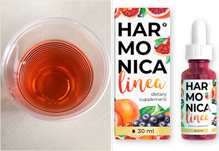
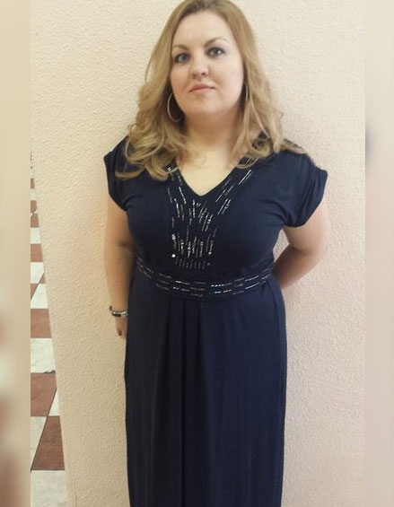
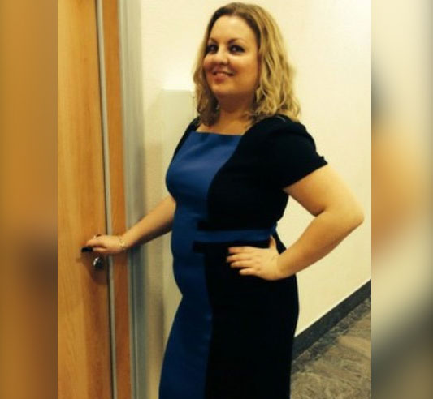
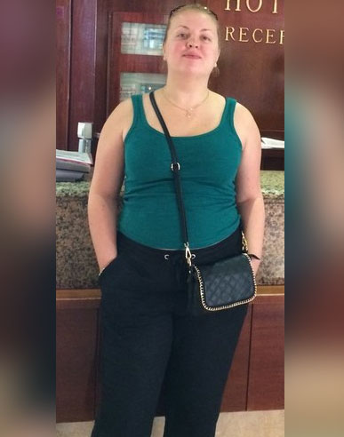
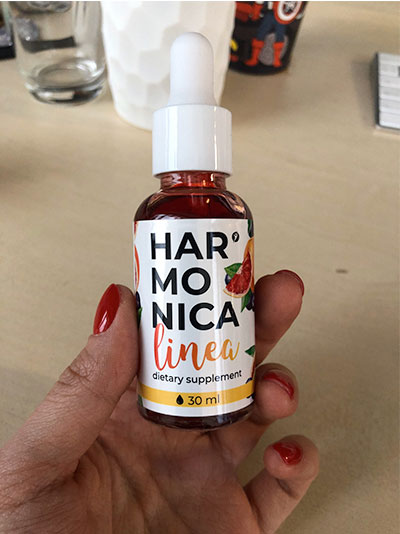
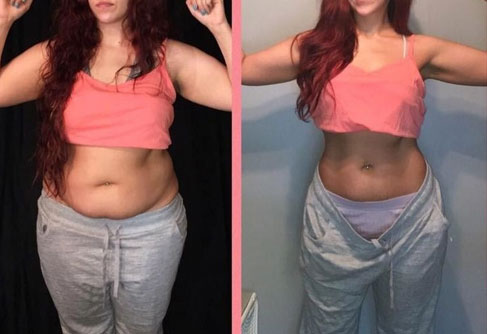
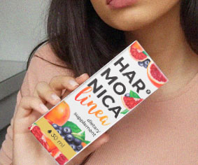
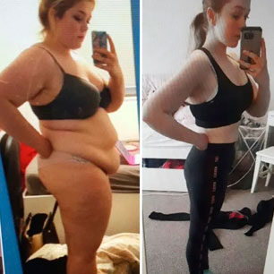
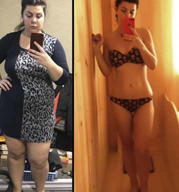

Abnehm-Tagebuch 18 kg in 6 Wochen
Versuch Nr. 1
Ich habe Brokkoli, Sellerie, Hähnchenbrust und Joghurt gekauft. Es war einfach, die Online Anweisungen zu befolgen: Alles war vorgegeben - die Größe der Portionen, die Anzahl der Proteine, Fette und Kohlenhydrate, die man täglich konsumieren darf, die Strecke, die man laufen sollte, die Anzahl an Liegestütze. Aber ich habe nur 5 Tage durchgehalten. All die Entbeerungen, einschließlich Laufen auf leeren Magen. Auch der frische Selleriesaft war nichts für mich. Ich hatte Hunger, war immer schlecht gelaunt, stritt mich mit meiner Familie und meinen Kollegen und geriet sogar in einen Autounfall. Alles, an was ich denke konnte, war eine Vier-Käse-Pizza.
Versuch Nr. 2
Nachdem ich in meinem Blog über meine Erfahrung schrieb, fand ich viele Gleichgesinnte. Frauen weltweit boten mir ihre Hilfe an und luden mich zu einem Abnehm-Wettbewerb ein. Sie erklärten mir gleich vorab, dass die Herausforderung ungewöhnlich war und ich mich definitiv damit anfreunden könnte.
Diese Abnehm-Methode erforderte weder Diät noch Sport. Alles, war ich tun musste, war ein Ergänzungsmittel mit dem Namen Harmonica Linea zu nehmen.
Es fiel mir schwer, das als Herausforderung anzusehen. Ich war sehr skeptisch, aber die Erfahrungsberichte der Frauen inspirierten mich und so willigte ich ein. Es war eine der besten Entscheidungen meines Lebens! Die 6 Wochen vergingen wie im Flug und was am allerwichtigsten ist, es hat sich für mich gelohnt! Ihr solltet es selbst ausprobieren! Seht selbst:
Beginn
Woche 1
Die Woche verging wie gewohnt. Haushalt, Arbeit, Haushalt, Arbeit. Der einzige Unterschied war die regelmäßige Einnahme von Harmonica Linea . Soweit gibt es noch keine sichtbaren Ergebnisse, aber es fühlt sich anders an. Ich habe keine Heißhunger mehr auf Snacks/Kaffee oder Croissants. Ich nehme keine zu großen Portionen mehr zu mir. Nach der Hälfte meiner Mahlzeit bin ich satt.

Gewicht, kg: 79.600
Maße, cm: 110/89/117
Woche 2
WOW! Kein Laufen, kein Sellerie, kein Brokkoli, aber ich verliere an Gewicht. Ich bin voller Motivation und freue mich! Schlafstörungen, Kopfschmerzen und Gereiztheit sind verschwunden. Ich habe aufhört, zu essen wie ein Pferd, aber habe keinen Hunger. Ich hätte nicht im Traum daran gedacht, dass das möglich wäre.
Bisher habe ich 4 kg abgenommen. Sieht man sich meinen Körper an, kann man die Veränderung kaum bemerken, aber mein Gesicht ist schlanker geworden.
Gewicht, kg: 77.800
Maße, cm: 108/88/117
Woche 3
Ich kann meine Überraschung kaum in Worte fassen. Ich habe 5 cm an der Taille verloren, und das in nur 3 Wochen!
Mir geht es echt toll, bin weder träge noch müde. Ich habe so viel Energie, dass ich Bäume ausreißen könnte. Zu Hause und bei der Arbeit.
Gewicht, kg: 74.400
Maße, cm: 104/84/114
Woche 4
Bergfest, 3 Wochen sind jetzt vorüber. Die Zeit verging wie im Flug, und trotzdem merke ich, wie sich mein Körper verändert. Ich habe in atemberaubendem Tempo abgenommen. Die Sachen, die mir vorher gepasst haben, sind mir jetzt alle zu groß. Das ist ein tolles Gefühl! :)
Meine Kollegen, Freunde und alle, die mich kennen, können nicht aufhören, mich mit Komplimenten zu überschütten. Das ist ein bisschen komisch, aber zeigt mir, dass ich genau auf dem richtigen Weg bin. Ich kann es kaum erwarten, das Ende dieser 6 Wochen zu erleben. Ich wüsste gerne, wie viele Kilos ich am Ende verloren haben werde.
Gewicht, kg: 68.200
Maße, cm: 97/80/107
Woche 5
Meine Freunde bezeichnen mich schon als Hexe, weil ich genauso viel esse wie sie und trotzdem abnehme. Ich habe ihnen noch nichts von Harmonica Linea erzählt. Alles ist toll, außer, dass ich jetzt neue Klamotten brauche. Alle meine Kleider sind mir jetzt zu groß! Bei der Arbeit gibt es eine Kleiderordnung. Letztes Jahr habe ich noch XL getragen, heute brauche ich eine M.
Gewicht, kg: 65.300
Maße, cm: 94/78/99
Woche 6
Wenn ich jetzt in den Spiegel schaue, sehe ich eine schöne Frau. Noch vor 6 Wochen sah ich eine fette Kuh. Wenn ich mir meine alten Kleider ansehen, wird mir erst bewusst, was für ein fettes Schwein ich war!
Und jetzt: Ich habe 18 kg verloren! 23 cm an den Hüften, 15 cm an der Taille und 20 cm Brustbereich. Aber meine Brüste sind noch immer genauso groß. Die Fettpolster am Rücken und die ekligen Hautfalten um meine Brustbereich herum sind verschwunden. Und das Beste, ich musste weder Hungern, noch mich beim Sport verausgaben.
Gewicht, kg: 62.400
Maße, cm: 91/74/94
Ich fühle mich wie ein Star. Alle, die mich kennen, bewundern mich jetzt.
Update:
Hi Ladies! Ich bekomme hunderte von Nachrichten jeden Tag. Ihr fragt mich, was Harmonica Linea ist und wo man es kaufen kann. Ich kann nicht jede Nachricht beantworten, aber ich möchte euch dennoch ein paar Infos geben.
Es handelt sich hierbei um Tropfen, die den Fettverbrennungsprozess anregen, ganz ohne Sport. Das Produkt besteht ausschließlich aus natürlichen Extrakten, so dass es ein Präparat ist, für das ihr kein Rezept braucht. Ihr gebt einfach 20 Tropfen von Harmonica Linea in ein Glas Wasser und trinkt das Morgens und Abends vor den Mahlzeiten.
Ihr könnt das Ergänzungsmittel auf der offiziellen Webseite bestellen. Damit seid ihr auf der sicheren Seite, dass ihr auch das Originalprodukt erhaltet und keine Fälschung.
Habt ihr mit eurem Gewicht zu kämpfen, dann verschwendet nicht weiter eure Zeit. Bestellt dieses Ergänzungsmittel so schnell wie möglich. Und hinterlasst mir eure Kommentare, wenn ihr Harmonica Linea ausprobiert habt. Ich freue mich schon!
Kommentare
Ich dachte schon, du hättest deinen Blog gelöscht. Ich freue mich für dich!
AntwortenWow! Du wirst bestimmt bald einen Antrag bekommen!
AntwortenIn der Regel nehme ich über den Winter bis zu 5 kg zu. Dieses Jahr sind es sogar 10 kg! Ich habe das Mittel bestellt. Alle andere Abnehm-Methoden sind doch reine Folter! Das will ich gar nicht erst ausprobieren.
AntwortenIst es nicht einfacher, sich das Fett absaugen zu lassen und das Problem so ein für alle Mal loszuwerden? Ich habe das letztes Jahr gemacht. Aber natürlich ist die Variante nicht sehr günstig.
AntwortenIch kann nicht so recht glauben, dass man so viel in nur einem Monat abnehmen kann, ganz ohne Diät oder Sport.
AntwortenJe älter du bist, desto schwieriger ist es, abzunehmen. Ernährungsumstellung funktioniert bei mir nicht. Dafür stehe ich zu sehr auf Süßes! Also habe ich mich entschieden dieses biologisch aktive Ergänzungsmittel zu probieren. Es ist perfekt für zu Hause oder für die Arbeit. Es zügelt des Appetit sofort. Ich kann die Veränderungen bereits sehen. Mein Gewicht geht langsam zurück. Ich habe in 6 Wochen 9 kg abgenommen. Seht euch mein Foto an:
 AntwortenHi, ich habe gestern die Bestellung erhalten. Und ich kann jetzt schon ein paar Worte dazu sagen. Es ist so gut, dass es sofort den Appetit unterdrückt! Gestern habe ich bereits weniger gegessen und heute bin ich immer noch total satt. Ich habe geschlafen wie ein Baby. Das ich mir echt wichtig, da ich unter Schlafstörungen leide und deshalb oft Medikamente nehmen musste.
 AntwortenIch nehme sehr schnell zu. Wenn ich einen Croissant oder ein bisschen Schokolade esse, sieht man mir das am nächsten Tag sofort an. Nach einer Woche Fasten bin ich dann wieder gut in Form. Aber das gehört jetzt der Vergangenheit an. Ich muss jetzt nicht mehr ständig darauf achten, was ich esse. Ich nehme Harmonica Linea und es spült den Hunger davon. Ich wiege jetzt 56 kg und kann das Gewicht halten.
AntwortenÜbrigens gehört die Fettabsaugung zu einem der gefährlichsten Eingriffe überhaupt. Und sie ist nicht zuverlässig. Eine meiner Freundinnen hat das hinter sich, aber sie musste die Operation alle 3 Jahre wiederholen. Je mehr Fett man durch diese Methode verliert, desto mehr setzt man auch wieder an.
AntwortenIch ging auf die Webseite, um mehr über das Nahrungsergänzungsmittel zu erfahren. Es besteht wirklich nur aus natürlichen Zutaten, also wollte ich es mal ausprobieren. Die meisten Abnehm-Produkte enthalten synthetische chemische Inhaltsstoffe. Ich habe bereits solche Pillen genommen und sie haben mir den Magen verdorben. Ich hoffe Harmonica Linea hat diese Nebenwirkungen nicht.
AntwortenIch habe eine Kollegin, die dieses Ergänzungsmittel nach dem Mittagessen nimmt. Sie hat wirklich viel abgenommen. Deshalb nehmen es jetzt auch andere Kolleginnen. Sie verlieren alle an Gewicht. Ich denke, ich sollte es auch mal ausprobieren.
AntwortenHarmonica Linea funktioniert wirklich. Ich bin vor 6 Monaten darauf gestoßen. Jetzt habe ich keine Probleme mehr mit Übergewicht, aber vorher habe ich 79 kg auf die Waage gebracht! Es ist perfekt für alle, die ihre Kilos satt haben und endlich schlank sein wollen. Es hat keinerlei Nebenwirkungen. Meine Hormone sind noch im Einklang und meiner Verdauung geht es gut.
 AntwortenDanke für die Empfehlung. Ich habe schon sämtliche Methoden getestet, aber kein Pfund verloren, egal was ich probiert habe. Ich hoffe, dieses Produkt kann mir helfen.
AntwortenIch habe dieses Produkt noch nicht im Laden oder in Apotheken gesehen. Wahrscheinlich ist es hier nicht erhältlich.
AntwortenWas für Apotheken meinst du? Sie hat doch geschrieben, dass man es nur auf der offiziellen Webseite kaufen kann. Apotheken verkaufen dir womöglich nur Imitate und nicht das Orignial Harmonica Linea. Ich habe mein Paket bereits erhalten und schon damit angefangen. Nach einer Woche war ich 3 kg leichter. Das ist ein super Anfang.
AntwortenIch habe eine Woche lang nur Joghurt gegessen. In der Zeit ging es mir echt schlecht. Ich musste sogar zu Hause bleiben, weil ich mich ständig übergeben musste. Aber das Ergebnis dieser Foltermethode waren 7 kg weniger.
AntwortenWas für eine Qual. Ich dachte, es wäre unmöglich, in so kurzer Zeit so viel abzunehmen. Aber wenn du auch das Ergänzungsmittel genommen hast....naja, ist ja jedem selbst überlassen. Es ist alles natürlich, das ist ein großer Vorteil!
AntwortenIch habe einen Fastentag einmal in der Woche. Das hilft mir dabei, in Form zu bleiben. Ich wiege 59 kg und bin 43 Jahre alt. Vielleicht hilft diese Information ein paar von euch. All diese Diäten sind doch totaler Unsinn. Man nimmt doch nach der Diät nur noch mehr zu.
AntwortenEs ist so schön, schlank zu sein! Wenn ich jetzt an mein altes Gewicht denke, geht es mir echt schlecht. Ich war so unsicher. Ich konnte den Menschen nicht in die Augen sehen. Unter den Kollegen hatte ich richtige Komplexe. Ich arbeite in einer Bank, wo es selbstverständlich eine Kleidervorschrift gibt. Jeder hat S und ich war die einzige, die XL trug. Ich habe insgesamt 27 kg abgenommen! Mein Körper ist jetzt auf die Hälfte geschrumpft, und ich musste mich neu einkleiden. Ich kann jedem nur Harmonica Linea empfehlen!
 Antworten